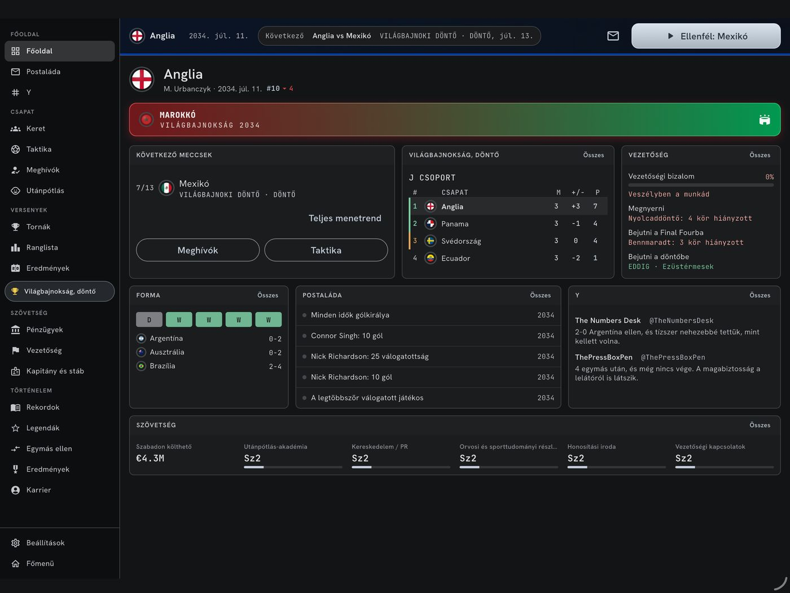
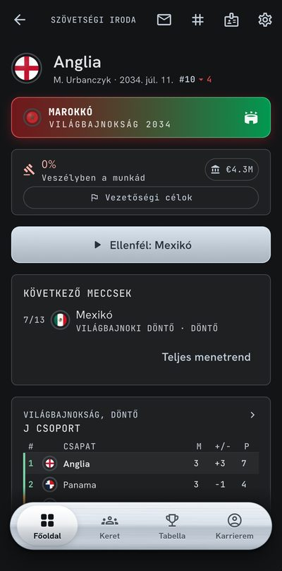

Football Nations Manager
Vegyél át egy válogatottat. Vezesd a futball Olümposzára.


Offline játszható
Minden meccs a telefonodon fut. Nincs fiók, nincs internetkapcsolat. A mentésedet később átviheted egy másik telefonra vagy táblagépre.
209 válogatott
Spanyolország vagy Zimbabwe? Más kihívások, más gondok. A ciklusok között válogatottat is válthatsz.
Végtelen ciklusok
Selejtezők, a kontinensed bajnoksága, a Világbajnokság és... újra. Sorsolások, a rendező kiválasztása és minden más, amit a válogatottak futballja hoz.
Nemzeti stadionok
Nézd meg a stadionjaidat a térképen, fejleszd őket, vagy építs újakat. A nagyobb stadionok pénzt hoznak, és segítenek, amikor rendezési jogra pályázol.
Rendezz bajnokságot
Pályázz az Európa-bajnokság (vagy a saját kontinensed bajnoksága) vagy a Világbajnokság rendezésére, és hozd haza a tornát.
Az év játékosa
Minden decemberben a világ szavaz. Felléphet-e valamelyik játékosod a gála színpadára?
28 nyelv
A játék 28 nyelven beszél, most már japánul, koreaiul, hindiül, thaiul, malájul és románul is.
Élő meccsek
Válts felállást, cserélj, emeld a morált a szünetben. Vagy csak zárd be... és vigyázz a Csaplár-csapdára!
Meccsek 2D-ben
Kövesd élőben minden meccsedet 2D TV módban, olyan stadionokban, ahol a lelátók mögött a város jól ismert látképe áll. Szalagok gólnál és lapoknál, pontrúgások és tizenegyespárbaj rúgásról rúgásra.
Időjárás
Eső, havazás, köd, pára, tiszta éjszaka, zivatar vagy homokvihar: az időjárás is beleszól a pályán.
A Szerkesztő
Szerkeszd a játékosokat, klubokat, stadionokat, versenyeket, szövetségi kapitányokat, szponzorokat, a sajtót és az Y-t. Exportáld az adatbázisodat, oszd meg a barátaiddal vagy a Discordunkon, és indíts karriert az övékén.
Tizenegyesek a te kezedben
Te választod ki a sorrendet, és te rúgod őket.
Az utánpótlás-piramis
U-13-tól U-21-ig. Kövesd a gyerekeket a legelejétől (az utánpótlás-válogatottak később jönnek).
Játékosok részletesen
Figyelj a terhelésre és az átigazolásokra. Minden hat a morálra és az erőnlétre.
A sajtó kérdez, a világ reagál
Vigyázz: egy meggondolatlan válasz nyomást épít. Az Y-on pedig szétszednek!
A saját karriered
Építsd a profilodat, határozd meg az egész szövetség költségvetését és irányát, teljesítsd a céljaidat.
Vezetőség, amelynek felelsz
A vezetőség hangulata minden. Egy kis kudarcot talán megbocsátanak, de egy nagy bukás után pakolhatsz. És akkor az egyetlen ajánlat talán Andorrából jön.
Rekordok, amelyek megmaradnak
Minden idők gólkirályai minden válogatottnál, minden bajnokságon és még sok más. A világ körülötted él, és lépést kell tartanod vele!
Egyetlen fizetés
Nincs előfizetés, nincs reklám, nincs játékon belüli fizetőeszköz. Soha.
Egy teljes ciklus ingyen
Játssz egy teljes ciklust ingyen, semmit sem visszatartva. Egy-két óra, és tudni fogod, neked való-e.
Hosszú távra készült
2026 tavasza óta fejlesztés alatt, és még sok minden jön: utánpótlás-válogatottak, kihívások. Ha tetszik, támogasd a projektet a teljes verzió megvásárlásával.
A játékon belül
Telefonok
Táblagépek

Rólam
Martinnak hívnak. Szoftvert írok, utazom, és imádom a futballt. Lövöldözős játékok helyett futballmenedzsereken nőttem fel, és innen ered ez az egész.
Valami gyorsat akartam, amivel játszhatsz a vécén, a villamoson vagy offline a repülőn, de amiben mégis van valódi mélység, és sosem fogy el. Van egy ötleted hozzá? Csatlakozz a Discordhoz, vagy írj nekem e-mailt.